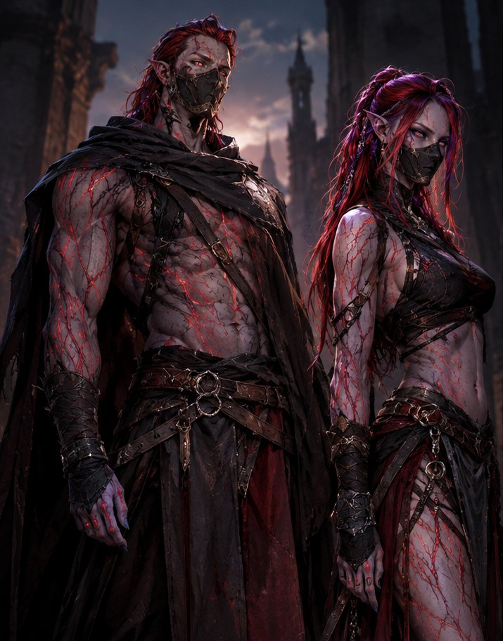
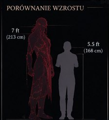
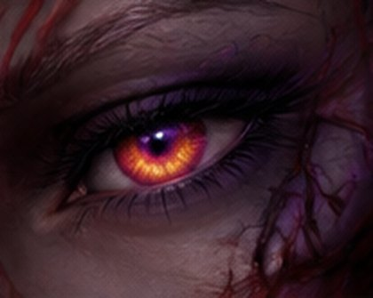
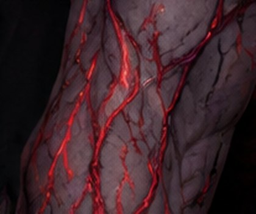
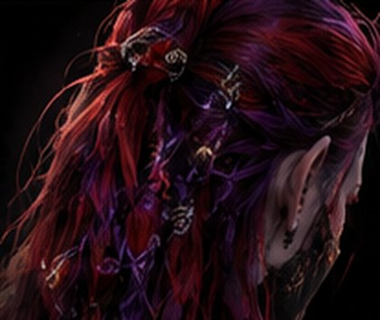
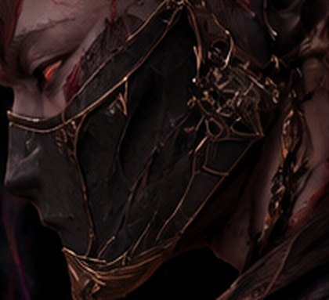

Szkarłatni
Dzieci Odłamania · Rasa Ruunis
Szkarłatni są potomkami pierwszych ludzi, którzy znaleźli się w Ruunis po Odłamaniu Światów. Ich wygląd od pokoleń budził lęk i nieufność.
Nie jesteśmy potworami. Jesteśmy tym, co świat stworzył, gdy się rozdzielił. A Ruunis wciąż w nas żyje.
☉Wygląd i cechy

Na pierwszy rzut oka przypominają wysokie półelfy. Osiągają nawet 7 stóp wzrostu, mają szczupłą, lecz wyraźnie umięśnioną sylwetkę. Ich twarze bywają lekko zdeformowane lub asymetryczne, a wielu Szkarłatnych nosi maski zasłaniające tę część oblicza, którą najczęściej spotykało się z lękiem i odrzuceniem.
Najbardziej rozpoznawalną cechą jest sieć szkarłatnych linii przebiegająca przez całe ciało. Przypomina rozgałęzione żyły, pajęczą nić lub błyskawice pod powierzchnią skóry. W chwilach wysiłku, zagrożenia albo używania mocy może rozjarzyć się intensywniejszym światłem.
Włosy najczęściej przybierają odcienie szkarłatu, czerwieni i głębokiego fioletu, czasem przechodząc w barwy przypominające płomień. Ich oczy są nienaturalnie jasne i kocie, przystosowane do widzenia tam, gdzie inni dostrzegają jedynie ciemność.
❖Podstawowe informacje

▣Galeria cech





⌛Pochodzenie
Dzieci pierwszych mieszkańców Ruunis
Szkarłatni wywodzą się od pierwszych mieszkańców, którzy przetrwali początki istnienia Ruunis po rozdzieleniu światów. Zmiany zapisane w ich krwi stały się dziedziczne. Z czasem ich społeczności pozostały nieliczne, między innymi dlatego, że odmienny wygląd wzbudzał strach, przesądy i niechęć.
Nie istnieje jeden sposób, w jaki Szkarłatni odnoszą się do swojego dziedzictwa. Jedni traktują szkarłatną sieć jako piętno, inni jako znak przetrwania i dowód więzi z własnym światem.
❖Cechy rasowe
Typ istoty – Humanoid
Szkarłatni są humanoidami. Ich wygląd może przypominać półelfów, ale nie określa to ich mechanicznego typu.
Rozmiar – Średni
Pomimo wzrostu sięgającego 7 stóp, ich rozmiar w zasadach gry to Średni.
Szybkość – 30 ft
Podstawowa szybkość chodzenia wynosi 30 stóp.
Widzenie w ciemności – 60 ft
Widzisz w ciemności w promieniu 60 stóp, jakby była przyćmionym światłem. Widzisz w niej odcienie szarości.
Wzrok w magicznej ciemności – 30 ft
Wpływ Ruunis pozwala ci widzieć również w magicznej ciemności w promieniu 30 stóp. W tym zasięgu widzisz ją tak, jak zwykłą ciemność.
Dziedzictwo krwi – Wybór ścieżki
Podczas tworzenia postaci wybierasz jedną z dwóch ścieżek: fizyczną lub magiczną. Nie możesz otrzymać zdolności obu ścieżek tą samą postacią.
⚔Szkarłatny Odruch
Szkarłatna sieć reaguje na zagrożenie, zanim ciało zdąży w pełni odczuć jego skutki. Gdy otrzymujesz obrażenia, możesz użyć reakcji, aby zmniejszyć te obrażenia o połowę (zaokrąglając w dół).
Liczba użyć zależy od poziomu postaci. Wszystkie wydane użycia odzyskujesz po zakończeniu długiego odpoczynku.
| Poziom postaci | Użycia |
|---|---|
| 1-5 | 1 raz |
| 6-9 | 2 razy |
| 10-20 | 3 razy |
Możesz użyć tej cechy po otrzymaniu obrażeń, ale przed ich zastosowaniem do twoich punktów wytrzymałości.
⚔Ścieżki dziedzictwa
Szkarłatne Rozdarcie
Twoja broń staje się przewodnikiem energii Ruunis. Gdy trafiasz istotę atakiem bronią białą, możesz uwolnić szkarłatną moc, która rozchodzi się po ranie niczym żywa sieć. Zadajesz dodatkowe obrażenia od trucizny.
| Poziom postaci | Dodatkowe obrażenia |
|---|---|
| 1-4 | 1k4 |
| 5-10 | 1k6 |
| 11-16 | 1k8 |
| 17-20 | 1k10 |
Możesz użyć Szkarłatnego Rozdarcia liczbę razy równą swojej premii z biegłości. Odzyskujesz wszystkie użycia po długim odpoczynku. Możesz aktywować tę cechę tylko raz na turę. Szkarłatna sieć pojawia się na ranie i po chwili znika.
Dziedzictwo Ruunis
Twoja krew przechowuje część energii Odłamanego Świata. Raz na długi odpoczynek możesz rzucić jedno zaklęcie bez zużywania slotu czaru.
| Poziom postaci | Maksymalny poziom zaklęcia |
|---|---|
| 1-4 | 1. poziom |
| 5-8 | 2. poziom |
| 9-12 | 3. poziom |
| 13-16 | 4. poziom |
| 17-20 | 5. poziom |
Zaklęcie musi być znane lub przygotowane przez ciebie i znajdować się na liście zaklęć jednej z twoich klas. Nie możesz rzucić zaklęcia wyższego poziomu niż wskazany dla twojego poziomu postaci. Używasz normalnej cechy rzucania czarów, w tym jej współczynnika i ST.
◆Maski i tożsamość
Maska nie jest obowiązkowym elementem wyglądu Szkarłatnych ani wymogiem mechanicznym. Dla jednych stanowi ochronę przed spojrzeniami obcych, dla innych symbol wspólnoty, żałoby lub dumy. Są też tacy, którzy świadomie nie zakrywają twarzy.
✦Informacje dla graczy
Przed stworzeniem postaci
Szkarłatni są rasą rzadką, a ich wygląd może przyciągać uwagę mieszkańców Atlamar i Ruunis. Reakcje otoczenia zależą od miejsca, lokalnych przekonań i doświadczeń konkretnych osób. Nie oznacza to, że każda postać będzie wrogo nastawiona.
Wspólnie z Mistrzem Gry ustal, skąd pochodzi twoja postać, jak postrzega szkarłatną sieć i dlaczego zdecydowała się opuścić dotychczasowe miejsce życia.